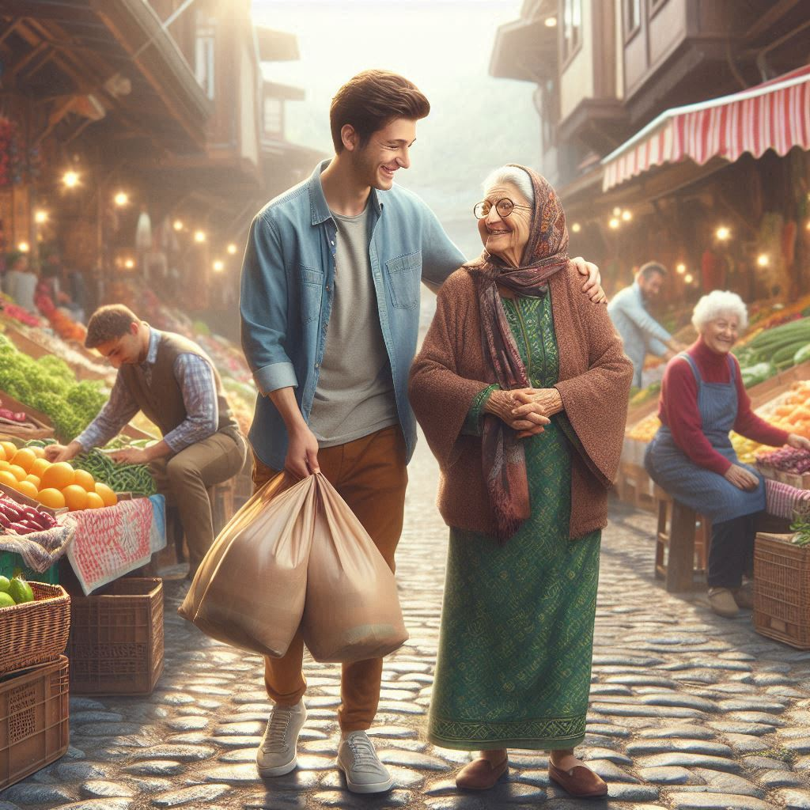

Salı Pazarı Alışveriş Refakati İhtiyacı
Yarın, 10:00 - 12:00 İlkadım / Çiftlik Mah. 1 Gönüllü Aranıyorİhtiyacın Detayı
İlkadım Çiftlik mahallesinde ikamet eden 72 yaşındaki Ayşe Teyzemiz, dizlerindeki rahatsızlık nedeniyle haftalık pazar alışverişini tek başına yapmakta zorlanmaktadır. Kendisiyle belirlenen buluşma noktasında bir araya gelerek, Salı Pazarı'nda refakat edecek ve poşetlerini evine kadar taşımasına yardımcı olacak enerjik ve güler yüzlü bir genç gönüllüye ihtiyacımız var.
Samsun'un yerel dayanışma kültürünü yaşatmak ve nesiller arası iletişimi güçlendirmek için bu harika fırsatı değerlendirebilir, Ayşe Teyzemizin hem yükünü hafifletip hem de hayır duasını alabilirsiniz.
Beklenen Hassasiyetler
- Fiziksel olarak pazar çantası taşıyabilecek yeterlilikte olmak.
- İletişimi kuvvetli, sabırlı ve saygılı bir üsluba sahip olmak.
- Belirtilen saatte (10:00) buluşma noktasında dakik bulunmak.

Ahmet Yılmaz
Saha Koordinatörü (İlkadım Bölgesi)Bu talep ile ilgili eşleşme sağlandığında, saha koordinatörümüz sizinle doğrudan iletişime geçerek teyzemizin iletişim ve açık adres bilgilerini güvenli bir şekilde paylaşacaktır.
Talep Özeti
- Süre: Yaklaşık 2 Saat
- İhtiyaç: 1 Gönüllü
- Kategori: Alışveriş & Refakat
- Durum: AÇIK (Acil)